Rediseño de la pantalla de venta (resultado real)
Valerius: tres columnas, filtro «Vendibles», marcado en mochila y almacén
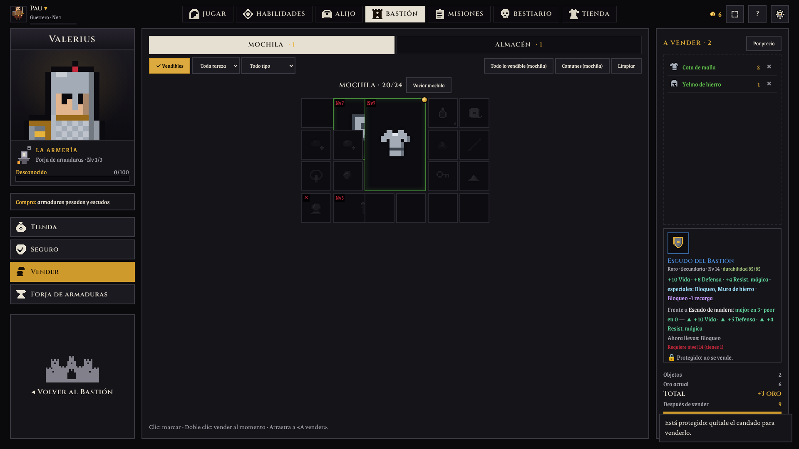
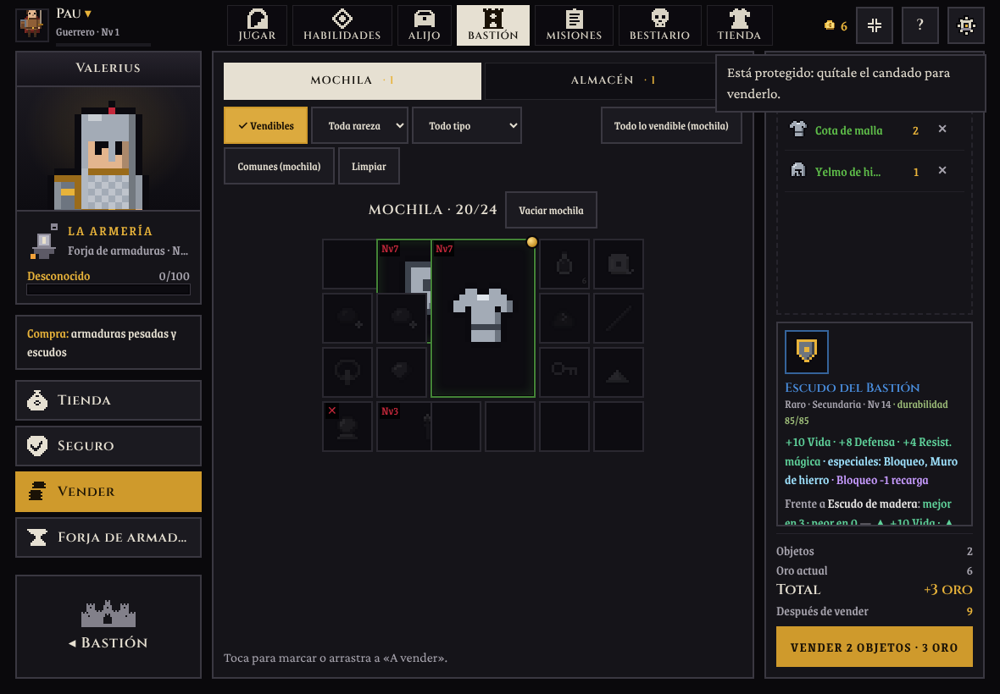
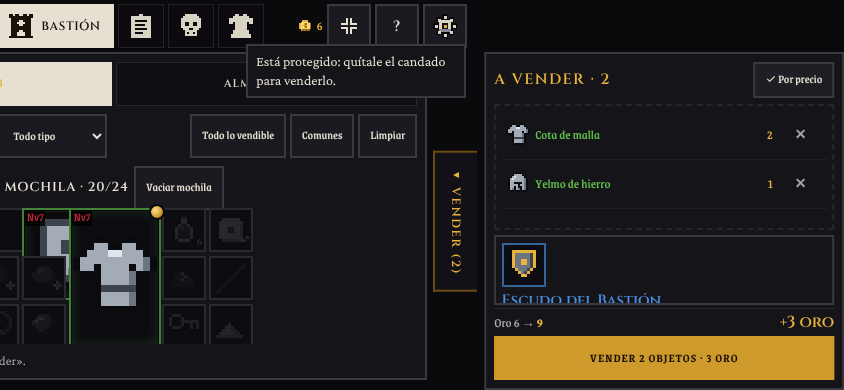
Al vender: «+N oro»
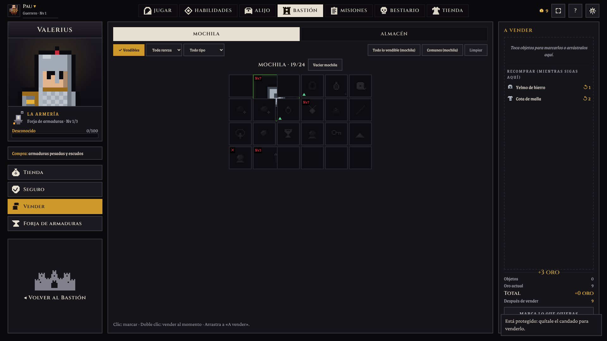
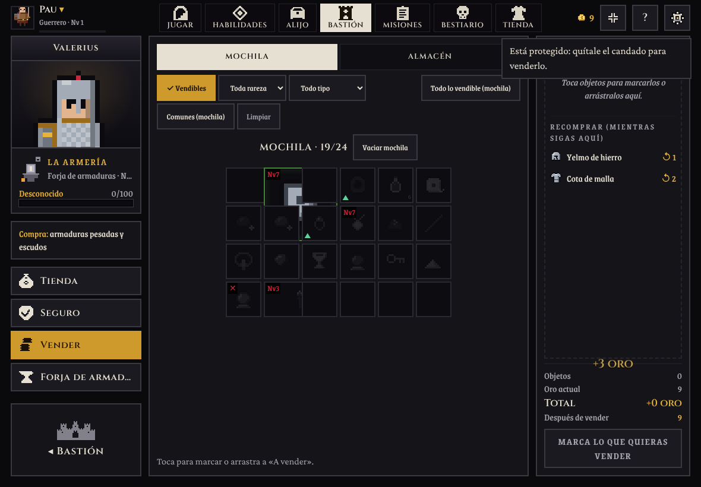
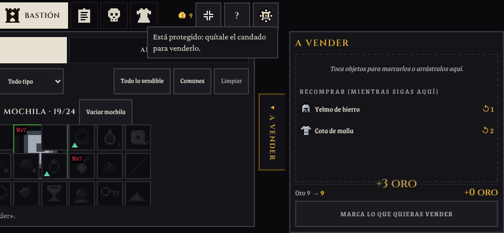
Vesper: vender 2 de 6 pociones
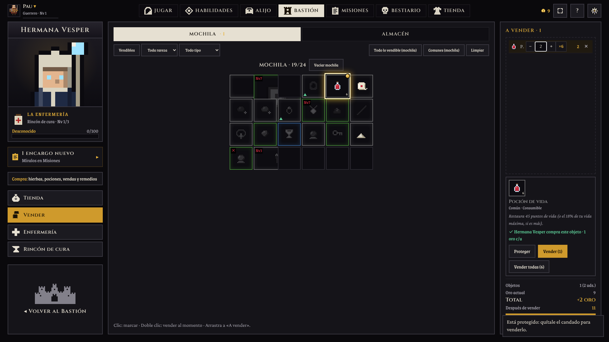
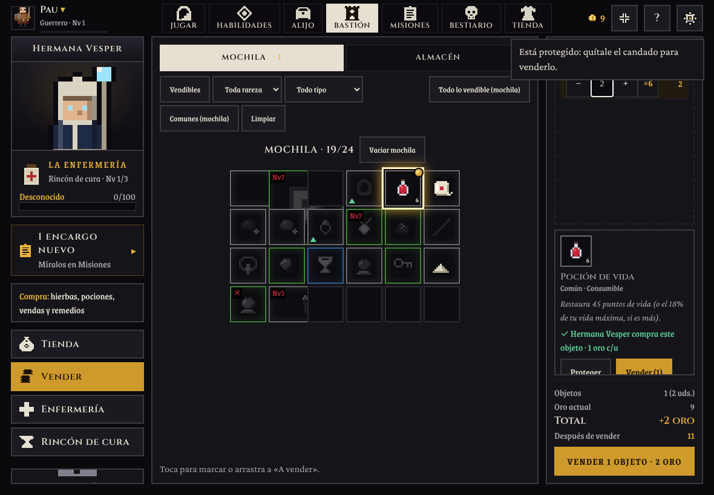
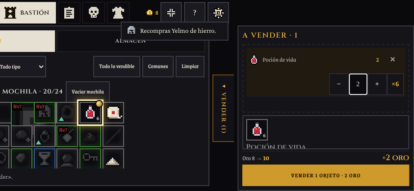
Ventanita: no lo compra y a quién se vende
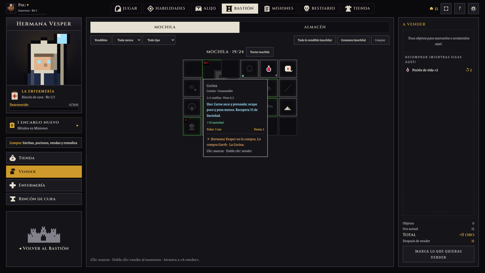
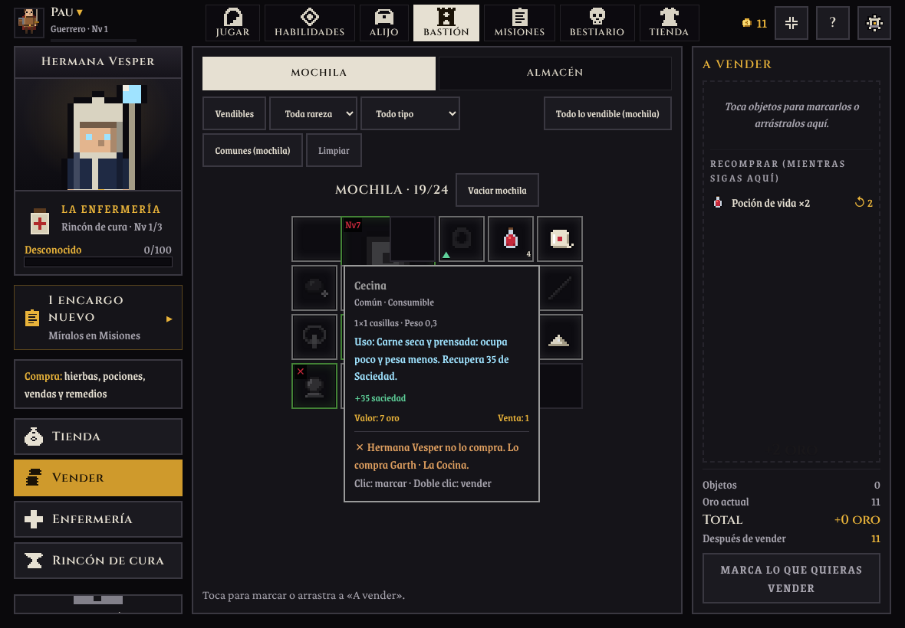